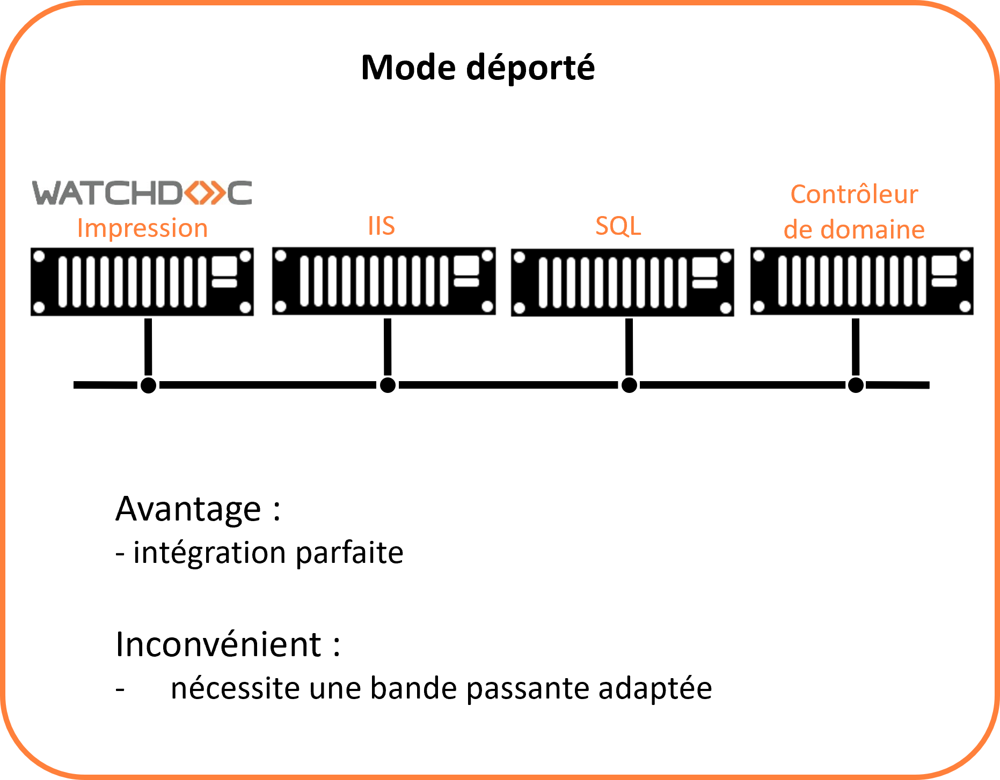
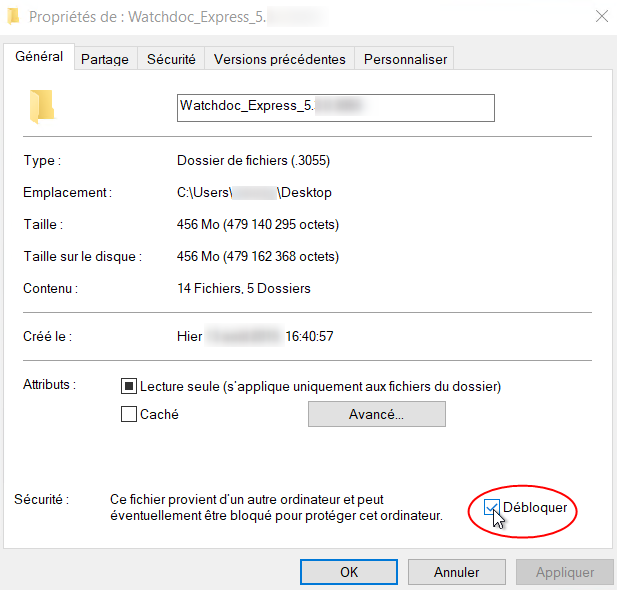
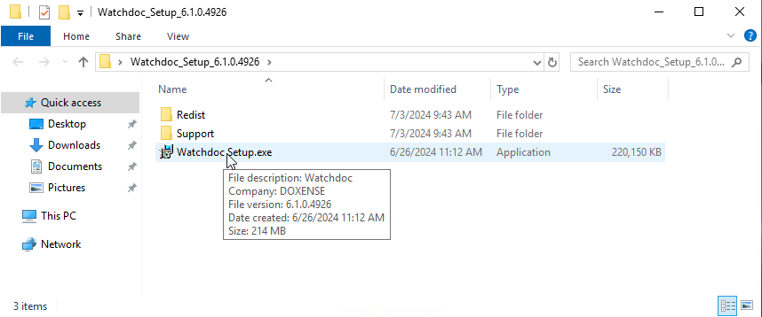
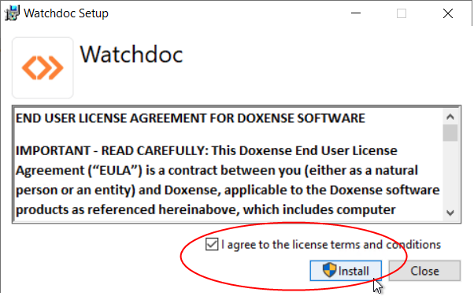
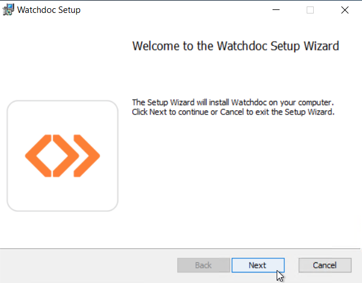
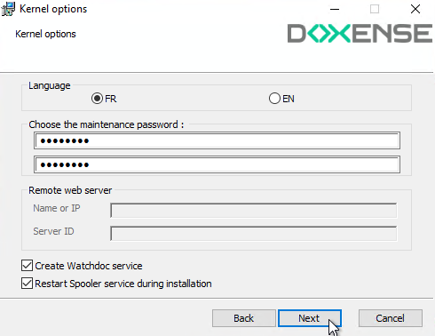
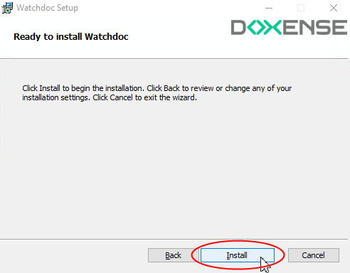
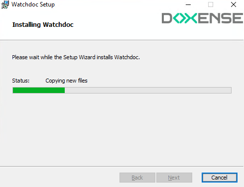

En mode déporté (configuration non-recommandée), les composants kernel  En anglais, Kernel signifie "noyau". Dans nos documents, il désigne le service de Watchdoc chargé de la gestion des impressions hors Site web. et site web (IIS) de Watchdoc sont installés sur des serveurs distincts :
En anglais, Kernel signifie "noyau". Dans nos documents, il désigne le service de Watchdoc chargé de la gestion des impressions hors Site web. et site web (IIS) de Watchdoc sont installés sur des serveurs distincts :
{kind=link}
Cliquez sur l'image pour l'agrandir
Ce chapitre vous indique la manière d'installer le kernel Watchdoc sur le serveur d'impression.
L'installation comporte les étapes suivantes :
-
vérification des prérequis ;
-
décompression de l'archive ;
-
installation de Watchdoc kernel sur le serveur d'impression.
Vous devrez compléter l'opération par l'installation du Site Web Watchdoc (cf. Watchdoc - Installer le site web)
Vérifier les prérequis
Avant de procéder à l'installation de Watchdoc, il convient de vérifier que les prérequis nécessaires sont respectés :
-
le rôle Serveur Web est installé ;
-
le rôle Services de documents et d'impression est installé ;
-
Microsoft® .NET Framework 4.8 est installé ;
-
le gestionnaire de base de données est installé ;
-
un compte de service (doté d'un mot de passe qui n'expire pas) est disponible pour activer WEScan
Décompresser l'archive
L'outil d'installation est enregistré dans un dossier d'archive nommé Watchdoc[…].zip. Il doit être décompressé dans un dossier du serveur.
-
Dans l'arborescence du serveur, créez un dossier dans lequel seront décompressés les fichiers d'installation Watchdoc.
-
Vérifiez que l’archive zip n’est pas bloquée :
-
cliquez droit sur le fichier de l’archive > Propriétés ;
-
dans la section Sécurité, cochez la case Débloquer si elle n'est pas cochée.
-
cliquez sur OK pour débloquer l'archive ou fermez la fenêtre si l'archive n'est pas bloquée :

-
-
Décompressez l'archive Watchdoc[...].zip dans le dossier créé à cet effet.
Lancer l'installation de Watchdoc
Dans le dossier d'archive décompressé Watchdoc Setup :
-
double-cliquez sur le fichier Watchdoc Setup.exe :

-
Acceptez les conditions de licence après en avoir pris connaissance, puis cliquez sur Install :

-
Les étapes de l'installation s'affichent dans la fenêtre Setup Progress.
-
Cliquez sur Restart pour redémarrer le serveur.
-
Après redémarrage, l'assistant d'installation de Watchdoc s'affiche.
-
Cliquez sur Next pour poursuivre l'installation :

La fenêtre Custom Setup apparaît et affiche le composant Kernel.
Configurer le composant Kernel de Watchdoc
Vous pouvez changer le répertoire d’installation par défaut du kernel Watchdoc. Pour le modifier :
-
sélectionnez Kernel ;
-
cliquez sur le bouton Browse et sélectionnez le nouveau chemin d’installation. Le bouton Disk Usage permet de vérifier qu’il reste suffisamment d’espace sur le disque que vous avez choisi pour installer Watchdoc .
-
cliquez sur Next pour poursuivre l'installation.
è La fenêtre Kernel options s'affiche. Dans cette fenêtre :
-
dans la section Language, choisissez la langue par défaut des interfaces ;
-
dans la section Password, modifiez, au besoin, le mot de passe d'administration (changeme par défaut) ;
-
Dans la section Remote web server (serveur web distant),
-
indiquez l'adresse IP ou le nom d’ordinateur du serveur qui héberge le service web IIS ;
-
indiquez dans la zone Server ID le nom attribué au du serveur sur lequel est installé le kernel.
-
-
Cochez la case Create Watchdoc service pour laisser le programmer installer Watchdoc avec les options par défaut. Dans le cas d'une installation en mode cluster, décochez la case.
-
Cochez la case Restart Spooler service during installation pour permettre un arrêt puis un redémarrage du service spouleur au cours de l'installation.
-
Cochez la case Optimise for WES with previews si Watchdoc est utilisé avec les interfaces embarquées (WES-Watchdoc Embedded Solutions) de périphériques de marques Samsung®, Sharp® ou Xerox®. Lorsque cette case est cochée, Watchdoc génère 20 vignettes, affichées dès l'arrivée des travaux sur le serveur d'impression. Dans le cas où la case n'est pas cochée, les vignettes sont générées à la demande du WES, ce qui nécessite un délai supplémentaire au moment de l'affichage.
-
Cliquez sur Next pour poursuivre l'installation.

-
Dans la fenêtre Ready to install Watchdoc, cliquez sur Install.

-
La fenêtre Installing Watchdoc affiche la progression de l'installation.

→ L'assistant affiche un message informant de la fin de l'installation.
-
Cliquez sur Finish pour quitter l'assistant.
-
L'assistant affiche un message informant de la réussite de l'installation.
-
Si le Site web Watchdoc n'est pas encore installé, procédez à son installation sur le site web dédié (cf. Installer le site web Watchdoc).
-
Si le Site web Watchdoc est déjà installé, l'installation est terminée. Procédez à la configuration initiale de Watchdoc (cf. Accéder à l'interface de configuration).